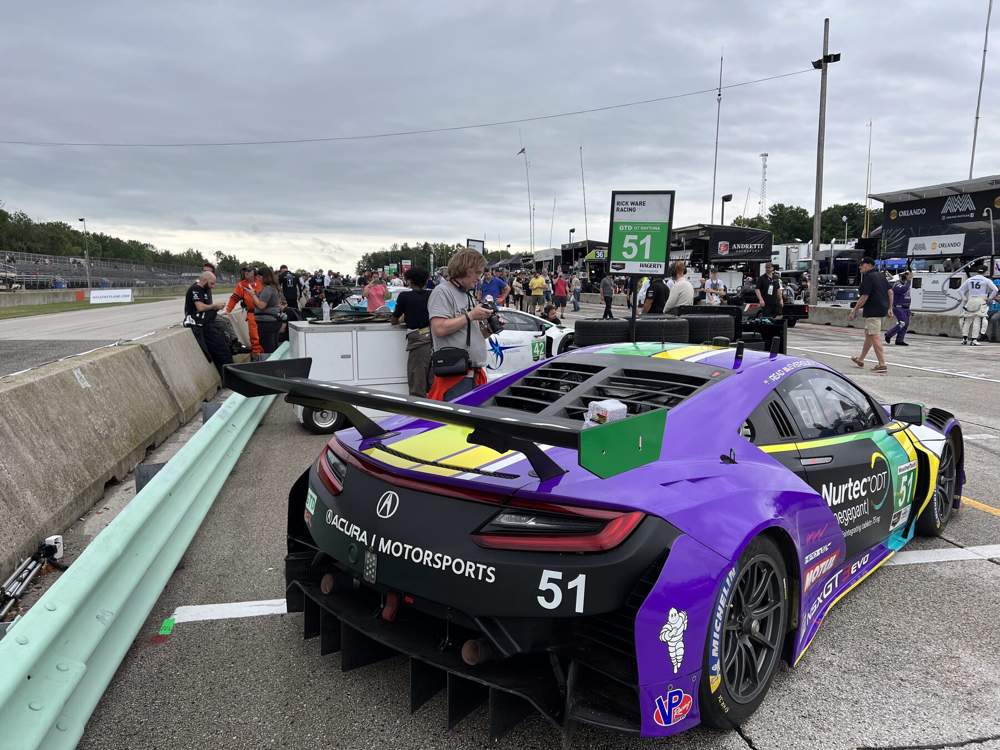
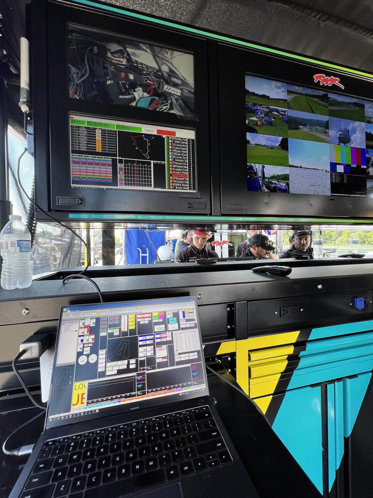

Services
Three things, done properly: engineer the car, run the race, and keep the data honest.

Race engineering
One engineer who owns the car for the weekend. Setup direction comes from data and driver feedback together, and every change is logged so the car never becomes a mystery.
- Setup and baseline. Springs, dampers, aero, and alignment built around the track and the tire.
- Session engineering. Run plans, change decisions, and driver debriefs between every session.
- Tire program. Pressures, temperature windows, and stint-by-stint wear tracking.

Strategy & race operations
The race is planned before the green flag. Fuel numbers, stint lengths, and pit windows are built in advance, then managed live as the race changes shape.
- Race planning. Fuel, tires, driver changes, and contingency plans for cautions and weather.
- Live pit wall. Timing, gaps, and traffic managed from the stand with clear calls to the car.
- Rules and classing. Sporting regulations, minimum drive times, and pit rules handled before they cost you.
Every weekend starts and ends on paper: a brief before the car unloads, a debrief before the next entry. Read about the reports

Data & LogiCAL
CorsaLogic runs its programs on LogiCAL, our own line of car management software. The same discipline is available to customer teams.
- Setup history. Every change, every track, searchable when you come back next season.
- Component life. Mileage and lifing on the parts that matter, before they fail on track.
- Build sheets. The car as it actually is, not as someone remembers it.